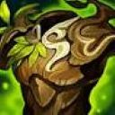
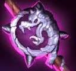
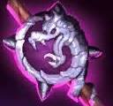

TFT has a simple yet complex item system, with many different items to choose from, and unique abilities for each item.

Getting components to create these items come from the carousels, as well as the creep rounds that happen at the end of every stage.

 

Components can also come from the different starting encounters, as well as from your augments.